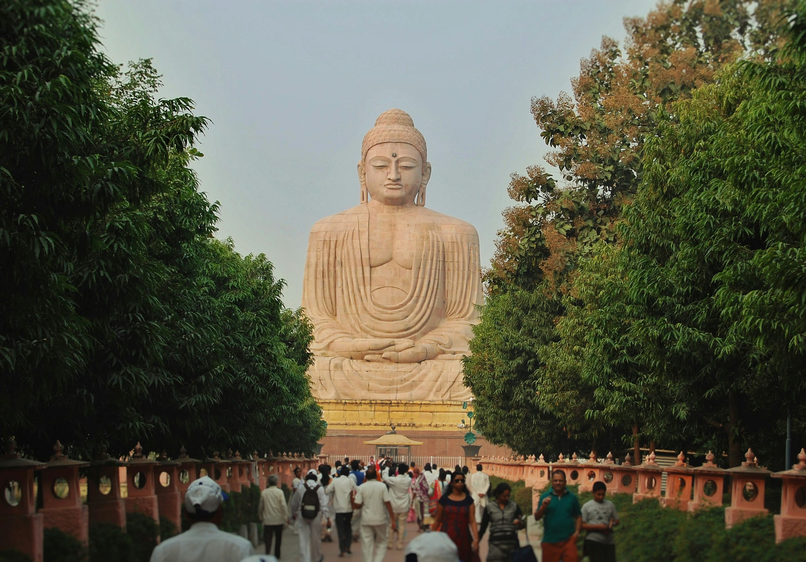

Historical city surronded by hills and konwn for its hot springs and peace stupa.
Site where Gautam Buddha attained enlightement.A UNESCO world Heritage site.
An ancient shiva on the Madhubani-Darbhanga highway, It's a major pilgrimage site.
A renowned ancient center of learning and a UNESCO World Heritage site
Chhath Festival
Chhath Puja is a Hindu festival dedicated to the Sun God, Surya, and his wife, Chhathi Maiya. Its a celeberation of thanks for blessing and prayers for well-being.prosperity, and happiness. The festival involves rigorous fasting, bathing in rivers or pounds and offering prayers to the rising and setting sun.Chath Puja, one of the most sacred festivals in Nothern India, is reiligiously carried out with much fervour and devotion.Considered and ancient vedic festival, It Celebrates the life-giving excellence of the Sun God , Surya, and his sister Shashthi Devi, better known as Chhathi Maiya in the region.
Sonepur Mela

The Sonepur Mela in 2025 will be in sonepur, Bihar, on the occasion of Kartik Purnima, which falls in November. It is Asia largest cattle fair and is known for its diverse range of animals traded. including elephants, cattle, and horse. The fair also attracts many Hindu devotees for a holy dip in the Ganga and Gandak rivers and prayers at the Harihar Nath Temple. The Sonepur Mela takes place annually on Kartik Purnima, which is the full moon day in the month of Kartik (November-December).The fair is held in Sonepur, Bihar, at the confluence of the Ganga and gandak rivers.
Makar Sankaranti
Makar Sankranti in 2025 will be celebrated on January 14th. Its's a Hindu festival marking the sun's transition into the zodiac sign Capricorn(Makar), and it signifies the end of the winter solstics and the start of longer days, known as Uttarayan. The festival is celebrated with various regional rituals, including holy dips in Sacred rivers, prayers to the sun, charitable donations, and kite flying. The festival is celebrated as a harvested, with varying traditions and names across India, such as as Pongal in Tamil Nadu and Magh Bihu in Assam. Makar Sankranti embodies the trimph of light over darkness and hope over despair, symbolizing renewel and new beginings.